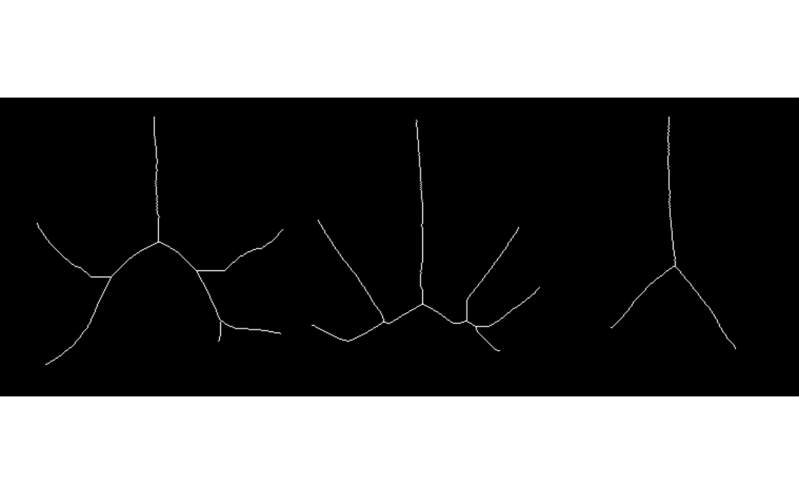

Perform Guo-Hall thinning on a binary image or list of binary images
Source:R/utils_imagem.R
image_thinning_guo_hall.RdThis function performs the Guo-Hall thinning algorithm (Guo and Hall, 1989) on a binary image or a list of binary images.
Usage
image_thinning_guo_hall(
img,
parallel = FALSE,
workers = NULL,
verbose = TRUE,
plot = FALSE,
...
)Arguments
- img
The binary image or a list of binary images to be thinned. It can be either a single binary image of class 'Image' or a list of binary images.
- parallel
Logical, whether to perform thinning using multiple cores (parallel processing). If TRUE, the function will use multiple cores for processing if available. Default is FALSE.
- workers
Integer, the number of workers (cores) to use for parallel processing. If NULL (default), it will use 40% of available cores.
- verbose
Logical, whether to display progress messages during parallel processing. Default is TRUE.
- plot
Logical, whether to plot the thinned images. Default is FALSE.
- ...
Additional arguments to be passed to
image_binary()ifimgis not a binary image.
Value
If img is a single binary image, the function returns the
thinned binary image. If img is a list of binary images, the
function returns a list containing the thinned binary images.
References
Guo, Z., and R.W. Hall. 1989. Parallel thinning with two-subiteration algorithms. Commun. ACM 32(3): 359–373. doi:10.1145/62065.62074
Examples
library(pliman)
img <- image_pliman("potato_leaves.jpg", plot = TRUE)
image_thinning_guo_hall(img, index = "R", plot = TRUE)
